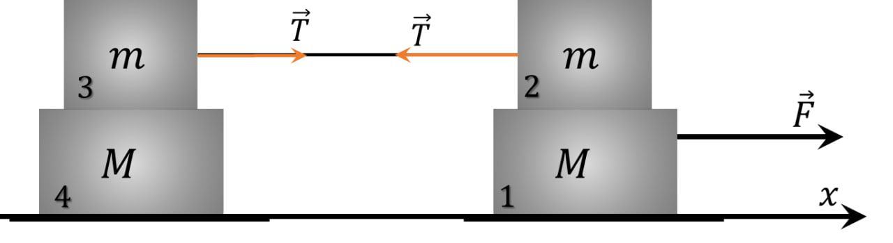

Условие:
\(2.1.31.\) На гладком горизонтальном столе расположена система грузов, изображенная на рисунке. Правый нижний груз тянут вдоль стола с силой $F$, как указано на рисунке. Коэффициент трения между грузами массы $m_1$ и $m_2$ равен $µ$. Найдите ускорение всех грузов системы.

Решение:

Перенумеруем грузы так, как показано на рисунке, и ось $X$ направим вправо.
Ясно, что тогда ни один из грузов не может иметь отрицательного ускорения.
Докажем что грузы $3$ и $4$ движутся как одно целое. Для этого предположим противное: пусть груз $3$ скользит по грузу $4$. Тогда между ними возникает сила трения
Обозначим ускорение этих грузов через $\bar{a}_{1}=\bar{a}_{2}$, а ускоренbе груза $1$ через $\bar{a}_{1}$.
Теперь рассмотрим два случая.
Случай 1. Пусть грузы $1$ и $2$ находятся в относительном покое и $\bar{a}_{1}=\bar{a}_{2}$.
Обозначим модуль силы трения покоя между ними через $F_1$ -модуль силы трения между грузами $3$ и $4$ через $F_2$ и модуль силы упругости нити через $T$ .
Тогда: для груза $1$
Поэтому
Пусть груз $2$ скользит то грузу $1$. Тогда на груз $1$ действует сила трения
Система грузов $2$, $3$ и $4$ движется как одно тело, масса которого $M_{0}=2m+M$ с ускорением